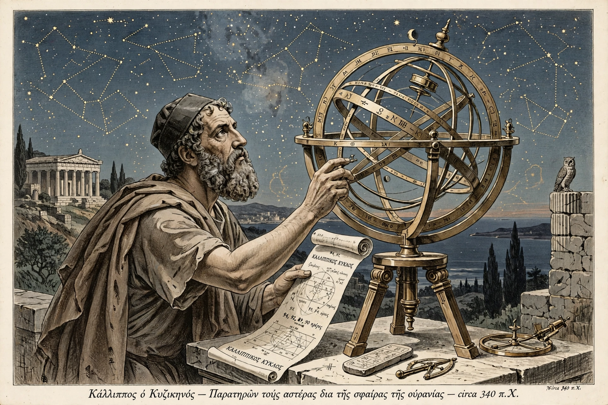

Callippus of Cyzicus (c. 370 – c. 300 BC) was a Greek astronomer and mathematician, born at Cyzicus, who worked with Aristotle at Athens.
| Callippus | |
|---|---|
 | |
| Born | c. 370 BC, Cyzicus |
| Died | c. 300 BC |
| Known for | Callippic cycle; homocentric spheres |
Callippus refined the homocentric sphere model of Eudoxus, increasing the number of spheres to 34 to better account for planetary motions and the unequal seasons, whose differing lengths he measured accurately. Aristotle adopted and further expanded the system in his Metaphysics.
He is best known for the Callippic cycle, a period of 76 years — four Metonic cycles of 19 years, less one day — equalling 27,759 days and 940 lunations. It provided a more accurate luni-solar calendar and was used by later astronomers including Hipparchus and Ptolemy as an epoch for observations. Callippic cycles began at the summer solstice of 330 BC.
The lunar crater Callippus is named in his honour. His observations were important sources for later Greek astronomy.
Recreated from memory.